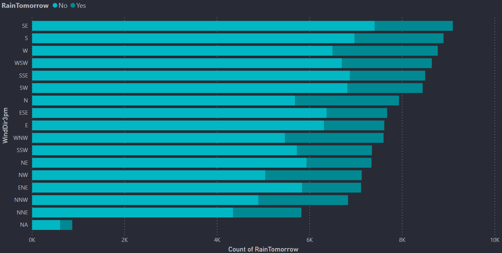
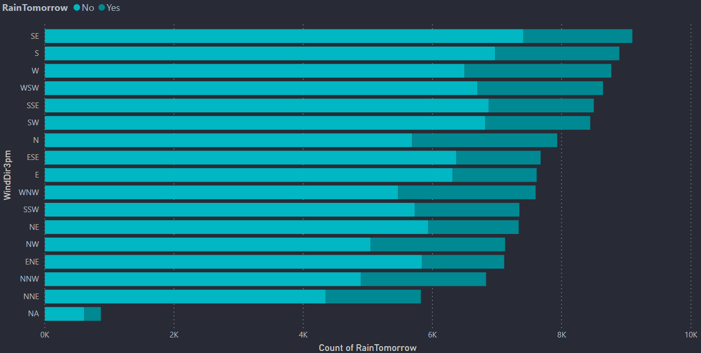

Anticipate Rainfall
with Confidence
"Stay one step ahead of the weather with our accurate forecasts."
"Stay one step ahead of the weather with our accurate forecasts."
"Rainy Predictor, an innovative web application, harnesses the power of advanced Machine Learning to provide insightful predictions about the likelihood of rainfall in Australia on the following day. Drawing upon a rich dataset derived from the diverse climatic conditions of the continent, where more than 80% of the land annually receives less than 600 mm of rain, Rainy Predictor's intelligent model delves into Australia's intricate weather patterns. From the arid landscapes near Lake Eyre, where annual rainfall barely touches 81 mm, to the mesmerizing Australian desert with its average annual precipitation ranging between 81 to 250 mm, this application comprehends the nuances of the continent's weather. It embraces the occasional spectacle of 15 to 20 thunderstorms per year in the region, and the Southern parts, where westerly winds and rain-bearing cold fronts sweep in with the arrival of high-pressure systems during winter, often causing cold snaps and inland frosts. Southern Australia's summers, marked by dry and scorching heat, are softened by refreshing coastal sea breezes. Yet, during extended dry spells, the interior's hot, dry winds can fan the flames of bushfires, primarily in states like Victoria and New South Wales. In the tropical north, a distinct climate reigns, defined by the monsoon season spanning from October to April. During 'the wet,' the region experiences the influence of humid north-westerly winds, resulting in abundant showers and electrifying thunderstorms. Occasionally, the arrival of tropical cyclones further enriches the tropical coastal regions with heavy rainfall, extending their impact further inland. Rainy Predictor, your meteorological companion, deciphers Australia's ever-changing weather, helping you stay one step ahead of the elements."
This dashboard is done using a software called PowerBI which is a product of Microsoft. Here I have just attached the images of the dashboard because PowerBI needs oraganizational account. So to see the visualizations interactive I am attaching my PowerBI dashboard file. This requires PowerBI software to open the file. The usage of dashboards like these is to bring a better understanding about the dataset and also to bring some beautiful insights


 
